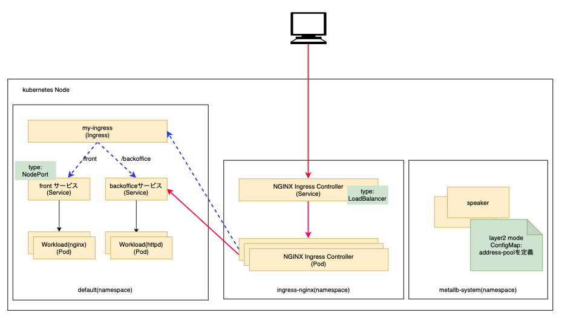
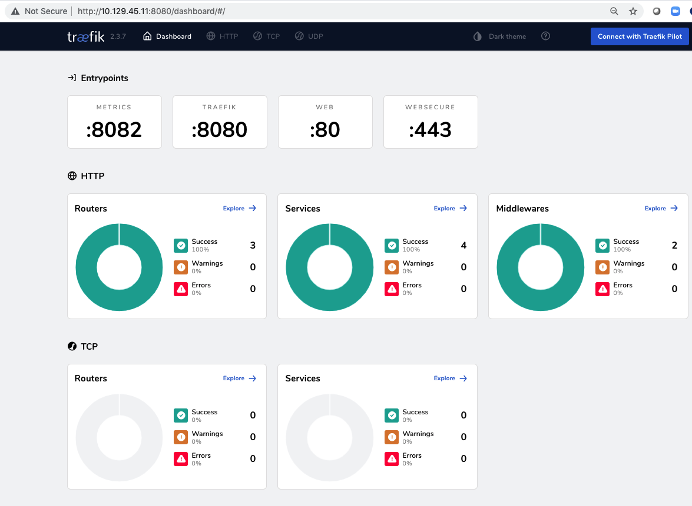

オンプレミズKubernetsクラスタにmetallbロードバランサー、nginxイングレスコントローラをセットアップする。

git clonne https://github.com/ntnx-huimin/k8s-metallb-ingress.git
cd 1.metallb/
kubectl apply -f namespace.yaml
kubectl applhy -f metallb.yaml
kubectl create secret generic -n metallb-system memberlist --from-literal=secretkey="$(openssl rand -base64 128)"
layer2-config.yamlにLB用IPアドレスのプールを設定する
kubectl applhy -f layer2-config.yaml

サービス「ingress-nginx-controller」の種類を「LoadBalancer」に変更

cd ../2.ingress-nginx
kubectl apply -f nginx-ingress/deploy.yaml
kubectl get all -n ingress-nginx

cd ../3.test/
kubectl apply -f test-nginx.yaml -f test-nginx.yaml
kubectl apply -f test-ingress-resource.yaml
kubectl get pod
# backoffice pod
kubectl exec -it httpd-799d75575c-8g8zd # 確認したpod名を利用
cd /usr/local/apache2/htdocs
mkdir -p backoffice
echo "backoffice with httpd">backoffice/index.html
# front pod
kubectl exec -it nginx-8c9df995d-p6lpm bash # 確認したpod名を利用
cd /usr/share/nginx/html/
mkdir -p front
echo "Hello from front pod with nginx"> front/index.html
kubectl get svc -n ingress-nginx
curl http://10.129.45.13/front/index.html
curl http://10.129.45.13/backoffice/index.html
cd ../4.traefik
kubectl create ns -n traefik
kubectl -n traefik apply -f 01-traefik-CRD.yaml
kubectl -n traefik apply -f 02-traefik-svc.yaml
kubectl -n traefik apply -f 03-traefik-Deployment.yaml
# 確認
kubectl get all -n traefik

ブラウザでURL: http://10.129.45.11:8080 にアクセス 